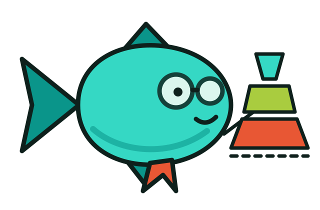

关于本站：一张图纸，不是一份营销页
本站是「鱼心快跑 / Yuxin Runs」品牌下的大众科普手册，主题是把麦肯锡留下的公开方法论讲成人话。它不是 McKinsey & Company 的官方网站，也没有任何隶属、授权或代言关系。下面交代我们怎么做内容、怎么画图、以及哪些事坚决不做。

鱼心快跑，Bug 追不上
品牌人格是「跑得快、不废话、给真东西」。按品牌规范第九节，每个站点要按自己的主题重画几何标记与吉祥物姿态：本站的标记是一个结论方块 + 三层金字塔（先说结论，再分层给论据），小鱼则戴上了圆眼镜，拿着指示棒讲图表。标记讲读者以为的「金字塔」，鱼讲本站真正教的「把话想清楚」。
两个图形都只出现在品牌位（导航、首页 pill、本页、页脚），不参与功能图标；标记是单 path、纯几何、明暗两版只换 fill。
为什么整站看起来像一张工程师的图纸
照品牌规范落地：暖白纸面 + 深海墨绿，青色做唯一的声音，珊瑚红只负责提醒；层级靠照度与虚线，不靠粗边框；所有元信息交给等宽大写小字。
#0A958A / #35D8C4
#E85734 / #FF7C5E
#3568D4 / #7BA1FF
#A9CC3F / #C4E35D
品牌规范要求自托管可变字体（Manrope / JetBrains Mono）。本站是无构建的静态页，为保持离线可打开，改用系统字体栈并保留同一套字重与字距设定；因此非整数字重在部分浏览器里会被近似到最接近的可用字重。形状还在，细微的「贵」会淡一点。
先建事实库，再写正文
科普站最容易翻车的地方是「顺手编个数字」。我们的做法是把调研先落成按主题分开的分级事实库（公司事实 36 条、方法论归属 30 条），再让正文里的每个数字都有门牌号；查不到就写「官网没写，我也不知道」。
调研
官网、报告、书目、二手交叉核对
分级
A 可核 / B 需限定 / C 流传说法
红线
写下明确不许出现的说法
写正文
具体场景里的幽默，不堆网络梗
配图
每图自带一句结论与口径说明
复核
数字回查事实库，预测值带年份
.qoder/research-mckinsey.md；流程为本站执行方式，非品牌规范原文逐字复述。figure、对照表、交互组件合计；单招详解页按「每页」计，不等于严格的图表数量统计。八条不许写，以及一条永远要给的东西
不抢别人的模型
五力、BCG 矩阵、价值链、SWOT 各有各的爹。
不编公司数字
营收、人数、报价、成功率：官网没写就不写。
不把预测当现实
估算值必须连年份和「预测」两个字一起出现。
不承诺结果
不写「照做就升职 / 盈利 / 进大厂」。
不写争议与八卦
不评价公司好坏，只讲公开方法与公开资料。
不冒充官方模板
所有可填表都标明「本站改编，非官方」。
示例不装成调研
每张示意图下面都有口径说明。
不给个案结论
不替你判断该不该投资、跳槽、签约。
每页页尾都留了免责声明与「该找谁」：涉及合同与条款找执业律师，涉及账目税务找会计师，涉及公司数据找数据负责人，涉及身体找医生，涉及场地与规则找当地主管机构。科普的终点不是「我替你决定了」，而是「你知道下一步该找谁、该查什么」。
通勤能听，窄屏能读，出处能查
明暗双主题
右上角切换，选择记在本机；页面底色与 theme-color 同步。
全站可听
底部播放条用浏览器语音合成连读正文，短句切分、可调语速、读完自动跳下一页，并接入系统媒体控制以便锁屏操作。
窄屏结构变形
横向时间轴变纵轴、表格变可滑、双栏塌成单栏，不是等比缩小。
动效与转场
页面切换淡入淡出、图表滚动进场、卡片悬停光斑与点击涟漪；单招页可用左右方向键翻招。
无障碍
键盘焦点有 teal 描边，装饰层不进朗读队列，支持「减少动态效果」偏好，动画关闭时内容照常可读。
图纸不是答案，是路线
点阵、虚线、大扩散阴影，这些不是为了好看，是为了让一眼扫过去就知道「这是可以动手改的东西」，而不是一张需要供起来的海报。
读完
挑一件真的小事，写一句可回答的问句。
合上
工具用完就放下，生活不用一直保持结构化。